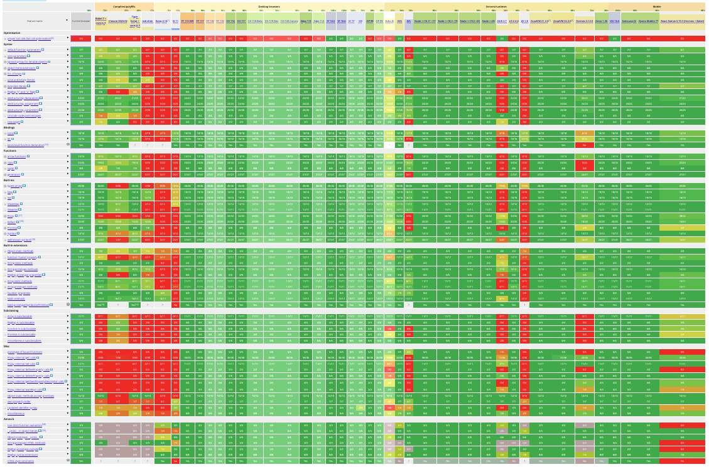

Web
Foundations of JavaScript
Bertil Chapuis
## <i class="fas fa-tasks"></i> Overview of Today's Class - Quiz (HTML/CSS) - Foundations of JavaScript - Values, Types, and Operators - Program Structure - Functions - Etc. - Regular Expressions - Introduction of next week's assignment
Quiz
Internet, WWW, HTML/CSS
## <i class="fas fa-question-circle"></i></i> Question 1 Quelles elements HTML sont sélectionnés par le sélecteur suivant? ``` li > li ``` ``` <ul> <li>A</li> <li>B <ul> <li>C</li> <li>D</li> </ul> </li> </ul> ``` <ol style="list-style-type: upper-alpha;"> <li>A</li> <li>B</li> <li>C</li> <li>D</li> <li>Aucune affirmation correcte</li> </ol>
## <i class="fas fa-question-circle"></i></i> Question 2 A quel rendu correspond le code HTML/CSS suivant? ``` <div id="a"> <div id="b"> Hello World! </div> </div> ``` ``` #a { display: block; padding: 10px; background-color: red; border: solid 10px black; } #b { text-align: center; display: block; background-color: white; } ``` <div style="width: 25%; float: left; font-size: 2em;"> <p>a)</p> </div> <div style="width: 25%; float: left; font-size: 2em;"> <p>b)</p> </div> <div style="width: 25%; float: left; font-size: 2em;"> <p>c)</p> </div> <div style="width: 25%; float: left; font-size: 2em;"> <p>d)</p> </div>
## <i class="fas fa-question-circle"></i></i> Question 3 A quel rendu correspond le code HTML/CSS suivant? ``` <table> <tr> <td rowspan="2">1</td> <td colspan="2">2</td> </tr> <tr> <td>3</td> <td>4</td> </tr> </table> ``` <div style="width: 25%; float: left; font-size: 2em;"> <p>a)</p> <table style="border: solid 1px; float: left"> <tr> <td rowspan="2" style="border: solid 1px">1</td> <td style="border: solid 1px">2</td> <td style="border: solid 1px">3</td> </tr> <tr> <td colspan="2" style="border: solid 1px">4</td> </tr> </table> </div> <div style="width: 25%; float: left; font-size: 2em;"> <p>b)</p> <table style="border: solid 1px; float: left"> <tr> <td rowspan="2" style="border: solid 1px">1</td> <td colspan="2" style="border: solid 1px">2</td> </tr> <tr> <td style="border: solid 1px">3</td> <td style="border: solid 1px">4</td> </tr> </table> </div> <div style="width: 25%; float: left; font-size: 2em;"> <p>c)</p> <table style="border: solid 1px; float: left"> <tr> <td colspan="2" style="border: solid 1px">1</td> <td rowspan="2" style="border: solid 1px">2</td> </tr> <tr> <td style="border: solid 1px">3</td> <td style="border: solid 1px">4</td> </tr> </table> </div> <div style="width: 25%; float: left; font-size: 2em;"> <p>d)</p> <table style="border: solid 1px; float: left"> <tr> <td style="border: solid 1px">1</td> <td style="border: solid 1px">2</td> </tr> <tr> <td style="border: solid 1px">3</td> <td style="border: solid 1px">4</td> </tr> </table> </div>
Foundations of JavaScript
## <i class="fab fa-js"></i> JavaScript JavaScript is a lightweight, **interpreted**, or **just-in-time** compiled programming language with first-class functions. ### Interpreted The interpreter reads the source code and executes it directly. It does not require the compilation of the program into machine-code. ### Just-in-time (JIT) compiled The interpreter compiles the hot parts of the source code into machine-code and executes it directly. The rest of the program is interpreted. ### First-class functions Functions are treated like any other variable. They can be stored in variables, passed as arguments to other functions, created within functions, and returned from functions. https://developer.mozilla.org/en-US/docs/Web/JavaScript
## <i class="fab fa-js"></i> JavaScript JavaScript is a **prototype-based**, multi-paradigm, **dynamic** language, supporting **object-oriented**, **imperative**, and **declarative** (e.g. functional programming) styles. ### Dynamic Performs at runtime what static languages perform at compilation time (e.g. dynamic typing). ### Prototype-based and object-oriented Behavior reuse (and inheritence) is achieved by cloning and extending objects. ### Imperative Imperative programming is a programming paradigm that uses statements that change a program's state. ### Declarative Declarative programming is a programming paradigm that expresses the logic of a computation without describing its control flow. https://developer.mozilla.org/en-US/docs/Web/JavaScript]
## <i class="fab fa-js"></i> JavaScript and ECMAScript History ECMAScript (or ES) is a specification created by ECMA International to standardize JavaScript. <img src="images/js_history_es6.png" alt="JavaScript History" style="width: 80%; margin-top: 100px;">
## <i class="fab fa-js"></i> From the browser to the server - Server-side JavaScript is not a novel idea (Netscape was already doing it in 1996). - Rhino, a JavaScript engine written in Java has been released as early as 1997. - In 2008, the first version of Chrome includes [V8](https://v8.dev/), an open-source JavaScript engine created by Lars Bak. - In 2009, Ryan Dahl creates node.js, a JavaScript environment based on V8 that runs on the server. - In 2018, Ryan Dahl creates Deno, a new runtime for JavaScript and TypeScript based on V8 and Rust. - In 2019, Oracle releases the first stable version of GraalVM making JavaScript a high performance language for the JVM. <img src="images/logo_nodejs.png" style="margin-left: 40px;width: 130px; float: left" />
## <i class="fab fa-js"></i> Client-side and Server-side Programming Today, JavaScript is commonly used in browsers (client-side), on servers (server-side), and at the edge (cloudflare, fastly, etc.). <img src="images/Fetching_a_page.png" style="width: 60%; margin-top: 40px" />
## <i class="fab fa-js"></i> ECMAScript 6 Support  https://kangax.github.io/compat-table/es6/
## <i class="fab fa-js"></i> Eloquent Javascript <img src="images/js_eloquent_javascript.jpg" style="width: 25%" /> https://eloquentjavascript.net/
## <i class="fab fa-js"></i> Javascript: The Good Parts https://www.oreilly.com/library/view/javascript-the-good/9780596517748/
## <i class="fab fa-js"></i> Client-side Javascript Adding JavaScript to a Web page is as simple as adding a `script` tag to the HTML document. ```html <script type='text/javascript'> console.log('Hello, World!'); document.writeln('Hello, World!') </script> ``` The `src` attribute is used to specify the location of the JavaScript file. ```html <script src="script.js"></script> ``` The `type` attribute is used to specify the type of the script. The default value is `text/javascript`. The `module` value is used to load a JavaScript module (ECMAScript 6). The `defer` attribute is used to defer the execution of the script until the page has been loaded. The `async` attribute is used to load the script asynchronously.
## <i class="fab fa-js"></i> Server-side Javascript After installing nodejs, a REPL (Read-Eval-Print-Loop) can be obtained by typing the node command: ```bash $ node Welcome to Node.js v12.8.0. Type ".help" for more information. > console.log("Hello, World!") Hello World! ``` https://nodejs.org/api/repl.html
## <i class="fas fa-hand-paper"></i> Get to know the REPL commands `.clear` - Reset the REPL context to an empty object and clears any multi-line expression currently being input. `.exit` - Close the I/O stream, causing the REPL to exit. `.help` - Show this list of special commands. `.save` - Save the current REPL session to a file: > .save ./file/to/save.js `.load` - Load a file into the current REPL session. > .load ./file/to/load.js `.editor` - Enter editor mode (<ctrl>-D to finish, <ctrl>-C to cancel). https://nodejs.org/api/repl.html#repl_repl_commands
## <i class="fab fa-js"></i> JavaScript's Types ECMAScript defines 7 **primitive** (Immutable) types for values: ```js undefined; // Undefined 3.14; // Number true; // Boolean "Heig-vd"; // String 9007199254740992n; // BigInt Symbol("Symbol") // Symbol null; // Null (Structural root primitive) ``` ECMAScript defines a special mutable type called **object** for collections of properties (objects and array). ```js {prop: "value"}; // Object ``` In a dynamic language you don't specify the type when you declare a variable and the type of a variable can change. https://developer.mozilla.org/en-US/docs/Web/JavaScript/Data_structures#Data_types
## <i class="fab fa-js"></i> typeof Operator The `typeof` operator is useful for determining the type of a variable or a value. The operand can be of any type: - If the operand is a primitive value, `typeof` returns a string indicating the type of the primitive value. - If the operand is an object, `typeof` returns `"object"`. ```js console.log(typeof 1); console.log(typeof {}); console.log(typeof []); // what about typeof null? ;) console.log(typeof null); ```
## <i class="fab fa-js"></i> Arithmetic Operators An arithmetic operator takes numerical values (either literals or variables) as their operands and returns a single numerical value. ```js 1 + 1; // addition 1 - 1; // subtraction 1 / 1; // division 1 * 1; // multiplication 1 % 1; // modulo 1 ** 1; // exponentiation ``` https://developer.mozilla.org/en-US/docs/Web/JavaScript/Guide/Expressions_and_Operators
## <i class="fab fa-js"></i> Assignment Operators An assignment operator assigns a value to its left operand based on the value of its right operand. ```js let a = 1; // arithmetic assignments a += 1; // addition a -= 1; // subtraction a *= 1; // multiplication a /= 1; // division a %= 1; // modulo a **= 1; // exponentiation ``` https://developer.mozilla.org/en-US/docs/Web/JavaScript/Guide/Expressions_and_Operators
## <i class="fab fa-js"></i> Destructuring Assignment The destructuring assignment syntax is a JavaScript expression that makes it possible to unpack values from arrays, or properties from objects, into distinct variables. ```js var [a, b] = [1, 2]; console.log(a); // 1 console.log(b); // 2 var [a, b, ...rest] = [1, 2, 3, 4, 5]; console.log(a); // 1 console.log(b); // 2 console.log(rest); // [3, 4, 5] var {a, b} = {a: 1, b: 2}; console.log(a); // 1 console.log(b); // 2 var {a, b, ...rest} = {a: 1, b: 2, c: 3, d: 4}; console.log(a); // 1 console.log(b); // 2 console.log(rest); // {c: 3, d: 4} ``` https://developer.mozilla.org/en-US/docs/Web/JavaScript/Reference/Operators/Destructuring_assignment
## <i class="fab fa-js"></i> String Operators The concatenation operator (+) concatenates two string values together, returning another string that is the union of the two operand strings. ```js "con" + "cat" + "e" + "nate"; ``` In practice, prefer template literals to concatenation. ```js `PI = ${Math.PI}`; // template literals ``` https://developer.mozilla.org/en-US/docs/Web/JavaScript/Reference/Template_literals
## <i class="fab fa-js"></i> Logical and Comparison Operators Logical expressions are evaluated from left to right. Recall that they are tested for possible "short-circuit" evaluation. ```js !true // false true && false // false true || false // true true ? true : false // true ``` https://developer.mozilla.org/en-US/docs/Web/JavaScript/Guide/Expressions_and_Operators
## <i class="fab fa-js"></i> Optional chaining (?.) The optional chaining operator (?.) permits reading the value of a property located deep within a chain of connected objects without having to expressly validate that each reference in the chain is valid. ```js const adventurer = { name: 'Alice', cat: { name: 'Dinah' } }; console.log(adventurer.dog?.name); // expected output: undefined ``` https://developer.mozilla.org/en-US/docs/Web/JavaScript/Reference/Operators/Optional_chaining
## <i class="fab fa-js"></i> Comparison Operators Comparison operators return a logical value based on whether the comparison is true. ```js 1 < 2; 2 > 1; 1 == 1; 1 != 2; // ... ``` **Automatic type conversion** is performed when comparing values of different types. It is a the root of many issues when using comparison operators. ```js "1" == 1 // true false == 0 // true 8 * null // 0 ``` **Strict equality** compares both the type and the value. It is recommended to use strict equality (===) and strict inequality (!==) operators. ```js "1" === 1 // false ``` https://developer.mozilla.org/en-US/docs/Web/JavaScript/Guide/Expressions_and_Operators
## <i class="fab fa-js"></i> Statements The `var` statement declares a variable, optionally initializing it to a value. The **scope** of a variable declared with `var` is its current execution context, which is either the enclosing function or, for variables declared outside any function, global. ```js var x = 1; {var x = 2;} // same variable console.log(x); // 2 ``` The `let` statement declares a block-scoped local variable, optionally initializing it to a value. The **scope** of a variable declared with `let` is the block in which it is declared. ```js let x = 1; {let x = 2;} // different variable console.log(x); // 1 ``` Constants are block-scoped, much like variables defined using the `let` statement. The value of a constant cannot change through re-assignment, and it can't be redeclared. ```js const x = 1; x = 2; // TypeError: Assignment to constant variable. ``` A single statement can define multiple variables or constants: `let one = 1, two = 2;`.
## <i class="fab fa-js"></i> Conditional Execution In JavaScript, conditional execution is controlled by the `if` statement. ```js let num = prompt("Enter a number"); if (num > 0) { alert(`${num} is positive`); } else if (num < 0) { alert(`${num} is negative`); } else { alert(`${num} is zero`); } ```
## <i class="fab fa-js"></i> Switch Sometimes a switch looks better than an `if...elseif...else` statement. ```js let val = prompt("Enter a letter"); switch(val) { case "a": alert("a"); break; case "b": alert("b"); break; default: alert("Not a or b"); break; } ```
## <i class="fab fa-js"></i> While and Do While *while* and *do while* are used to loop until a condition is met. ```js let num = 0; while (num < 10) { console.log(num); num += 1; } ``` ```js let echo = ""; do { echo = prompt("Echo"); console.log(echo); } while (echo != "stop"); ```
## <i class="fab fa-js"></i> For Loops The classic `for` statement is used to loop a given number of times over a block. ```js for (let num = 0; num < 10; num++) { console.log(num); } ``` The `for...in` statement iterates over the enumerable properties of an object. ```js let obj = {a: 1, b: 2, c: 3}; for (var prop in obj) { console.log(prop, obj[prop]); } ``` The `for...of` statement creates a loop iterating over iterable objects. ```js let nums = [0, 1, 2, 3, 4, 5, 6, 7, 8 , 9]; for (let num of nums) { console.log(num); } ```
## <i class="fab fa-js"></i> JavaScript Break and Continue The `break` statement terminates the current loop. The `continue` statement terminates the execution of the current iteration and continues the execution of the loop with the next iteration. `break` and `continue` can also be used with labelled statements. ```js mylabel: for (let num = 0; num < 5; num++) { if (num === 5) { continue mylabel; } console.log(num) } ``` https://developer.mozilla.org/en-US/docs/Web/JavaScript/Reference/Statements/label
## <i class="fab fa-js"></i> JavaScript Exceptions In Javascript, exceptions can be handled using the `try...catch` statement. ```js try { variable; // ReferenceError: variable is not defined } catch (error) { // Fails silently } ``` Exceptions can be triggered using `throw` and `Error`: ```js throw new Error("AAHHARG!!!"); ```
## <i class="fab fa-js"></i> JavaScript Functions A function is created with an expression that starts with the keyword `function` and can be assigned to a regular variable. It can have parameters and may `return` a value. #### Declaration Notation ```js function square(x) { return x * x; } // or var square = function(x) { return x * x; } ``` #### Arrow Notation ```js var square = x => x * x // or var square = (x) => { return x * x; } ```
## <i class="fab fa-js"></i> JavaScript Function Parameters Function parameters can be made optional by specifying default values. ```js var square = function(x = 2) { return x * x; } console.log(square()) // 4 console.log(square(3)) // 9 ```
## <i class="fab fa-js"></i> JavaScript Recursion It is fine for a function to call itself. ```js function factorial(n) { return n == 1 ? n : n * factorial(n-1); } console.log(factorial(5)) // 5 * 4 * 3 * 2 * 1 = 120 ``` .. as long as it does not overflow the call stack.
## <i class="fab fa-js"></i> JavaScript Function Scopes - The scope of a variable, is the part of the program (block or function) in which it is visible. - The scope of a variable defined with `var` outside of a function is `global`, it is visible everywhere. - The scope of a variable defined with `let` and `const` are `local` to the block in which they are declared. - The scope of function parameters are `local` and can be referenced only in that function. - Local variables are added to the **call stack** every time a function is called and freed when the function returns.
## <i class="fab fa-js"></i> Higher-Order Functions Higher-order functions allow us to abstract over actions, not just values. For example, we can have functions that create new functions. ```js function greaterThan(n) { return m => m > n; } let greaterThan10 = greaterThan(10); console.log(greaterThan10(11)); // true ``` https://eloquentjavascript.net/05_higher_order.html
### <i class="fa fa-hand-paper"></i> JavaScript Closure A closure is the combination of a function and the local scope within which that function was declared. ```js function wrap(value) { let v = value; return () => v; } console.log(wrap(1)()); // 1 ``` Try to implement a counter using a closure?
Regular Expressions
## <i class="fas fa-question-circle"></i> Regular Expressions Regular expressions are patterns used to **match** and **extract** character combinations in strings. It is usefull for validating inputs, parsing files, extracting information from free text. For instance, given the format for [registration plates](https://fr.wikipedia.org/wiki/Plaque_d%27immatriculation_suisse ) in Switzerland: - Validate that the given string is a valid registration plate - Extract all the registration plates listed in a unstructured text Format for registration plates in Switzerland: https://developer.mozilla.org/en-US/docs/Web/JavaScript/Guide/Regular_Expressions
## <i class="fab fa-js"></i> Building Regular Expressions The following notations can be used to define a regular expression in Javascript. ```js const re1 = /ab+c/; const re2 = new RegExp(/ab+c/); ``` A regular expression is usually built with the following constructs: - **Character Classes** (`.`, `\s`, `\d`) that distinguish types of chararters (letters or digits) - **Character sets** (`[a-z]`) that match any of the enclosed characters - **Either operator** (`x|y`) that match either the left or right handside values - **Quantifiers** (`*`, `+`, `?`, `{n}`, `{n,m}`) that indicate the number of times an expression matches - **Boundaries** (`^`, `$`) that indicate the beginnings and endings of lines and words - **Groups** (`()`, `(?<name>)`, `(?:)`) that extracts and remember (or not) information from the input - **Assertions** (`x(?=y)`) that helps at defining conditional expressions https://developer.mozilla.org/en-US/docs/Web/JavaScript/Guide/Regular_Expressions
## <i class="fab fa-js"></i> Fun with Flags Regular expressions have optional flags that allow for functionality like global and case insensitive searching. ```js const re1 = /ab+c/; // no flag const re2 = /ab+c/g; // global search const re3 = /ab+c/i; // case-insensitive search const re4 = /ab+c/m; // multi-line search const re5 = /ab+c/gi // global case-insensitive search ``` https://developer.mozilla.org/en-US/docs/Web/JavaScript/Guide/Regular_Expressions
## <i class="fab fa-js"></i> Executing Regular Expressions The following notations can be used to execute regular expressions. ```js const re = /ab+c/; console.log(re.test("ac")); // false console.log(re.test("abc")); // true console.log(re.test("abbc")); // true console.log(re.test("abbbc")); // true console.log(re.exec("ac")); // null console.log(re.exec("abbc")); // ['abbc', index: 0, input: 'abbc', groups: undefined] console.log(JSON.stringify([..."ac abc abbc abbbc".matchAll(/ab+c/g)])); // [["abc"],["abbc"],["abbbc"]]; ``` In addition to `matchAll`, a string comes with the `match`, `replace`, `search` and `split` methods. https://developer.mozilla.org/en-US/docs/Web/JavaScript/Guide/Regular_Expressions
## <i class="fas fa-hand-paper"></i> Hands-on with Regular Expressions - Try the afformentionned constructs with an online regex evaluator. - Write a regular expression that extracts the canton and the number of a Swiss registration plates. - Write a regular expression that extracts a list of Swiss registration plates from a free text. https://regexr.com https://regex101.com/